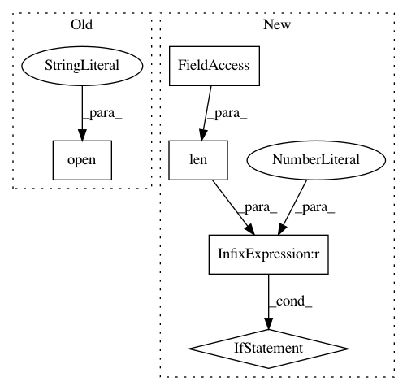

5ca403cee17ee1e2a704e03bf06d47f2ce9ba222,examples/audio.py,,,#,33
Before Change
f.close()
with io.open("sound.wav", "rb") as f:
x.text("Sending wave...")
x.audio(f)
After Change
avdir = os.path.expanduser("~")
audiofiles = get_audio_files_in_dir(avdir)
if len(audiofiles) == 0:
st.write(
"Put some audio files in your home directory (%s) to activate this player."
% avdir
)
else:
filename = st.selectbox(
"Select an audio file from your home directory (%s) to play" % avdir,
audiofiles,
0,
)
audiopath = os.path.join(avdir, filename)
st.audio(audiopath)
st.header("Generated audio (440Hz sine wave)")
def note(freq, length, amp, rate):
In pattern: SUPERPATTERN
Frequency: 3
Non-data size: 5
Instances
Project Name: streamlit/streamlit
Commit Name: 5ca403cee17ee1e2a704e03bf06d47f2ce9ba222
Time: 2020-02-06
Author: naomi@nthmost.com
File Name: examples/audio.py
Class Name:
Method Name:
Project Name: junyanz/BicycleGAN
Commit Name: 07eeeac726b1b7f771e10909426663cc6bd0c477
Time: 2018-05-24
Author: junyanzhu89@gmail.com
File Name: options/base_options.py
Class Name: BaseOptions
Method Name: parse
Project Name: google/language-resources
Commit Name: a847e176cb012c8d0469693961e4e90c8131136d
Time: 2016-01-07
Author: mjansche@google.com
File Name: xh/evaluate_pronunciation_rules.py
Class Name:
Method Name: